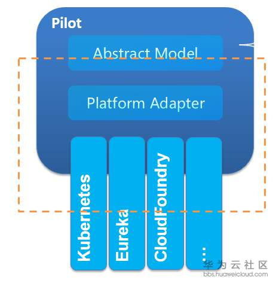
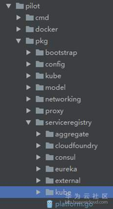
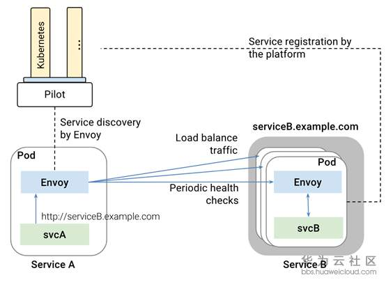

<!DOCTYPE html>
<html lang="en" >

  <head>
    <meta charset="utf-8">
<meta name="viewport" content="width=device-width, initial-scale=1, shrink-to-fit=no">

<meta property="og:title" content="Istio技术与实践01： 源码解析之Pilot多云平台服务发现机制" />
<meta property="og:description" content="前言 本文结合Pilot中的关键代码来说明下Istio的服务发现的机制、原理和流程。并以Eureka为例看下Adapter的机制如何支持多云环境下的服务发现。可以了解到： 1. Istio的服务模型; 2. Istio发现的机制和原理; 3. Istio服务发现的adpater机制。 基于以上了解可以根据需开发集成自有的服务注册表，完成服务发现的功能。 服务模型 首先，Istio作为一个（微）服务治理的平台，和其他的微服务模型一样也提供了Service，ServiceInstance这样抽象服务模型。如Service的定" />
<meta property="og:type" content="article" />
<meta property="og:url" content="http://idouba.cc/istio-01-code-pilot-service-discovery-adapter/" />
<meta property="article:published_time" content="2018-07-21T16:12:44+00:00" />
<meta property="article:modified_time" content="2018-07-21T16:12:44+00:00" />

<meta name="twitter:card" content="summary"/>
<meta name="twitter:title" content="Istio技术与实践01： 源码解析之Pilot多云平台服务发现机制"/>
<meta name="twitter:description" content="前言 本文结合Pilot中的关键代码来说明下Istio的服务发现的机制、原理和流程。并以Eureka为例看下Adapter的机制如何支持多云环境下的服务发现。可以了解到： 1. Istio的服务模型; 2. Istio发现的机制和原理; 3. Istio服务发现的adpater机制。 基于以上了解可以根据需开发集成自有的服务注册表，完成服务发现的功能。 服务模型 首先，Istio作为一个（微）服务治理的平台，和其他的微服务模型一样也提供了Service，ServiceInstance这样抽象服务模型。如Service的定"/>
<meta name="generator" content="Hugo 0.80.0" />


    
<script type="application/ld+json">
{
  "@context": "http://schema.org",
  "@type": "BlogPosting",
  "headline": "Istio技术与实践01： 源码解析之Pilot多云平台服务发现机制",
  "url": "http:\/\/idouba.cc\/istio-01-code-pilot-service-discovery-adapter\/",
  "wordCount": "3817",
  "datePublished": "2018-07-21T16:12:44+00:00",
  "dateModified": "2018-07-21T16:12:44+00:00",
  "author": {
    "@type": "Person",
    "name": "idouba"
  },
  "keywords": "Istio, Code"
}
</script>


    <link rel="canonical" href="http://idouba.cc/istio-01-code-pilot-service-discovery-adapter/">

    <title>Istio技术与实践01： 源码解析之Pilot多云平台服务发现机制 | 爱豆吧！</title>

    
    <!-- combined, minified CSS -->
    
    <link href="http://idouba.cc/css/style.6da5c906cc7a8fbb93f31cd2316c5dbe3f19ac4aa6bfb066f1243045b8f6061e.css" rel="stylesheet" integrity="sha256-baXJBsx6j7uT8xzSMWxdvj8ZrEqmv7Bm8SQwRbj2Bh4=" crossorigin="anonymous">
    

    <!-- minified Font Awesome for SVG icons -->
    
    <script defer src="http://idouba.cc/js/fontawesome.min.90e14c13cee52929ac33e1c21694a3cc95063a194eb22aad9f7976434e1a9125.js" integrity="sha256-kOFME87lKSmsM&#43;HCFpSjzJUGOhlOsiqtn3l2Q04akSU=" crossorigin="anonymous"></script>

    <!-- RSS 2.0 feed -->
    

    

    

  </head>

  <body>

    
    <div class="blog-masthead">
      <div class="container">
        <nav class="nav blog-nav">
          <a class="nav-link " href="http://idouba.cc/">Home</a>
        </nav>
      </div>
    </div>
    

    
    
    <header class="blog-header">
      <div class="container">
        <h1 class="blog-title" dir="auto"><a href="http://idouba.cc/" rel="home">爱豆吧！</a></h1>
        <p class="lead blog-description" dir="auto">idouba@beta.</p>
      </div>
    </header>
    
    

    
    <div class="container">
      <div class="row">
        <div class="col-sm-8 blog-main">

          


<article class="blog-post">
  <header>
    <h2 class="blog-post-title" dir="auto"><a href="http://idouba.cc/istio-01-code-pilot-service-discovery-adapter/">Istio技术与实践01： 源码解析之Pilot多云平台服务发现机制</a></h2>
    <p class="blog-post-meta"><time datetime="2018-07-21T16:12:44Z">Sat Jul 21, 2018</time> by idouba in 
<span class="fas fa-folder" aria-hidden="true"></span>&nbsp;<a href="/categories/istio/" rel="category tag">Istio</a>


<span class="fas fa-tag" aria-hidden="true"></span>&nbsp;<a href="/tags/code/" rel="tag">Code</a>, <a href="/tags/istio/" rel="tag">Istio</a>

</p>
  </header>
  <h2 id="前言">前言</h2>
<p>本文结合Pilot中的关键代码来说明下Istio的服务发现的机制、原理和流程。并以Eureka为例看下Adapter的机制如何支持多云环境下的服务发现。可以了解到： 1. Istio的服务模型; 2. Istio发现的机制和原理; 3. Istio服务发现的adpater机制。 基于以上了解可以根据需开发集成自有的服务注册表，完成服务发现的功能。</p>
<h2 id="服务模型">服务模型</h2>
<p>首先，Istio作为一个（微）服务治理的平台，和其他的微服务模型一样也提供了Service，ServiceInstance这样<a href="https://github.com/istio/old_pilot_repo/blob/master/doc/service-registry.md">抽象服务模型</a>。如<a href="https://github.com/istio/istio/blob/505af9a54033c52137becca1149744b15aebd4ba/pilot/pkg/model/service.go">Service</a>的定义中所表达的，一个服务有一个全域名，可以有一个或多个侦听端口。</p>
<div class="highlight"><pre style="color:#f8f8f2;background-color:#272822;-moz-tab-size:4;-o-tab-size:4;tab-size:4"><code class="language-go" data-lang="go"><span style="color:#66d9ef">type</span> <span style="color:#a6e22e">Service</span> <span style="color:#66d9ef">struct</span> {
    <span style="color:#75715e">// Hostname of the service, e.g. &#34;catalog.mystore.com&#34;
</span><span style="color:#75715e"></span>    <span style="color:#a6e22e">Hostname</span> <span style="color:#a6e22e">Hostname</span> <span style="color:#e6db74">`json:&#34;hostname&#34;`</span>
    <span style="color:#a6e22e">Address</span> <span style="color:#66d9ef">string</span> <span style="color:#e6db74">`json:&#34;address,omitempty&#34;`</span>
    <span style="color:#a6e22e">Addresses</span> <span style="color:#66d9ef">map</span>[<span style="color:#66d9ef">string</span>]<span style="color:#66d9ef">string</span> <span style="color:#e6db74">`json:&#34;addresses,omitempty&#34;`</span>
    <span style="color:#75715e">// Ports is the set of network ports where the service is listening for connections
</span><span style="color:#75715e"></span>    <span style="color:#a6e22e">Ports</span> <span style="color:#a6e22e">PortList</span> <span style="color:#e6db74">`json:&#34;ports,omitempty&#34;`</span>
    <span style="color:#a6e22e">ExternalName</span> <span style="color:#a6e22e">Hostname</span> <span style="color:#e6db74">`json:&#34;external&#34;`</span>
    <span style="color:#f92672">...</span>
 }
</code></pre></div><p>当然这里的Service不只是mesh里定义的service，还可以是通过serviceEntry接入的外部服务。每个port的定义在这里：</p>
<div class="highlight"><pre style="color:#f8f8f2;background-color:#272822;-moz-tab-size:4;-o-tab-size:4;tab-size:4"><code class="language-go" data-lang="go"><span style="color:#66d9ef">type</span> <span style="color:#a6e22e">Port</span> <span style="color:#66d9ef">struct</span> {
    <span style="color:#a6e22e">Name</span> <span style="color:#66d9ef">string</span> <span style="color:#e6db74">`json:&#34;name,omitempty&#34;`</span>
    <span style="color:#a6e22e">Port</span> <span style="color:#66d9ef">int</span> <span style="color:#e6db74">`json:&#34;port&#34;`</span>
    <span style="color:#a6e22e">Protocol</span> <span style="color:#a6e22e">Protocol</span> <span style="color:#e6db74">`json:&#34;protocol,omitempty&#34;`</span>
 }
</code></pre></div><p>除了port外，还有 一个name和protocol。可以看到支持如下几个Protocol ：</p>
<div class="highlight"><pre style="color:#f8f8f2;background-color:#272822;-moz-tab-size:4;-o-tab-size:4;tab-size:4"><code class="language-go" data-lang="go"><span style="color:#66d9ef">const</span> (
   <span style="color:#a6e22e">ProtocolGRPC</span> <span style="color:#a6e22e">Protocol</span> = <span style="color:#e6db74">&#34;GRPC&#34;</span>
    <span style="color:#a6e22e">ProtocolHTTPS</span> <span style="color:#a6e22e">Protocol</span> = <span style="color:#e6db74">&#34;HTTPS&#34;</span>
    <span style="color:#a6e22e">ProtocolHTTP2</span> <span style="color:#a6e22e">Protocol</span> = <span style="color:#e6db74">&#34;HTTP2&#34;</span>
    <span style="color:#a6e22e">ProtocolHTTP</span> <span style="color:#a6e22e">Protocol</span> = <span style="color:#e6db74">&#34;HTTP&#34;</span>
    <span style="color:#a6e22e">ProtocolTCP</span> <span style="color:#a6e22e">Protocol</span> = <span style="color:#e6db74">&#34;TCP&#34;</span>
    <span style="color:#a6e22e">ProtocolUDP</span> <span style="color:#a6e22e">Protocol</span> = <span style="color:#e6db74">&#34;UDP&#34;</span>
    <span style="color:#a6e22e">ProtocolMongo</span> <span style="color:#a6e22e">Protocol</span> = <span style="color:#e6db74">&#34;Mongo&#34;</span>
    <span style="color:#a6e22e">ProtocolRedis</span> <span style="color:#a6e22e">Protocol</span> = <span style="color:#e6db74">&#34;Redis&#34;</span>
    <span style="color:#a6e22e">ProtocolUnsupported</span> <span style="color:#a6e22e">Protocol</span> = <span style="color:#e6db74">&#34;UnsupportedProtocol&#34;</span>
 )
</code></pre></div><p>每个服务实例ServiceInstance的定义如下</p>
<div class="highlight"><pre style="color:#f8f8f2;background-color:#272822;-moz-tab-size:4;-o-tab-size:4;tab-size:4"><code class="language-go" data-lang="go"><span style="color:#66d9ef">type</span> <span style="color:#a6e22e">ServiceInstance</span> <span style="color:#66d9ef">struct</span> {
    <span style="color:#a6e22e">Endpoint</span>         <span style="color:#a6e22e">NetworkEndpoint</span> <span style="color:#e6db74">`json:&#34;endpoint,omitempty&#34;`</span>
    <span style="color:#a6e22e">Service</span>          <span style="color:#f92672">*</span><span style="color:#a6e22e">Service</span>        <span style="color:#e6db74">`json:&#34;service,omitempty&#34;`</span>
    <span style="color:#a6e22e">Labels</span>           <span style="color:#a6e22e">Labels</span>          <span style="color:#e6db74">`json:&#34;labels,omitempty&#34;`</span>
    <span style="color:#a6e22e">AvailabilityZone</span> <span style="color:#66d9ef">string</span>          <span style="color:#e6db74">`json:&#34;az,omitempty&#34;`</span>
    <span style="color:#a6e22e">ServiceAccount</span>   <span style="color:#66d9ef">string</span>          <span style="color:#e6db74">`json:&#34;serviceaccount,omitempty&#34;`</span>
 }
</code></pre></div><p>熟悉SpringCloud的朋友对比下SpringCloud中对应<a href="https://github.com/spring-cloud/spring-cloud-commons/blob/master/spring-cloud-commons/src/main/java/org/springframework/cloud/client/ServiceInstance.java#L25">interface</a>，可以看到主要字段基本完全一样。</p>
<div class="highlight"><pre style="color:#f8f8f2;background-color:#272822;-moz-tab-size:4;-o-tab-size:4;tab-size:4"><code class="language-java" data-lang="java"><span style="color:#66d9ef">public</span> <span style="color:#66d9ef">interface</span> <span style="color:#a6e22e">ServiceInstance</span> <span style="color:#f92672">{</span>
    String <span style="color:#a6e22e">getServiceId</span><span style="color:#f92672">();</span>
    String <span style="color:#a6e22e">getHost</span><span style="color:#f92672">();</span>
    <span style="color:#66d9ef">int</span> <span style="color:#a6e22e">getPort</span><span style="color:#f92672">();</span>
    <span style="color:#66d9ef">boolean</span> <span style="color:#a6e22e">isSecure</span><span style="color:#f92672">();</span>
    URI <span style="color:#a6e22e">getUri</span><span style="color:#f92672">();</span>
    Map<span style="color:#f92672">&amp;</span>lt<span style="color:#f92672">;</span>String<span style="color:#f92672">,</span> String<span style="color:#f92672">&amp;</span>gt<span style="color:#f92672">;</span> getMetadata<span style="color:#f92672">();</span>
 <span style="color:#f92672">}</span>
</code></pre></div><p>以上的服务定义的代码分析，结合官方spec可以非常清楚的定义了服务发现的数据模型。但是，Istio本身没有提供服务发现注册和服务发现的能力，翻遍代码目录也找不到一个存储服务注册表的服务。<a href="https://istio.io/docs/concepts/traffic-management/load-balancing/">Discovery部分的文档</a>是这样来描述的：</p>
<p>对于服务注册，Istio认为已经存在一个服务注册表来维护应用程序的服务实例(Pod、VM)，包括服务实例会自动注册这个服务注册表上；不健康的实例从目录中删除。而服务发现的功能是Pilot提供了通用的服务发现接口，供数据面调用动态更新实例。</p>
<p>即Istio本身不提供服务发现能力，而是提供了一种adapter的机制来适配各种不同的平台。</p>
<h2 id="多平台支持的adpater机制">多平台支持的Adpater机制</h2>
<p>具体讲，Istio的服务发现在Pilot中完成，通过以下框图可以看到，Pilot提供了一种平台Adapter，可以对接多种不同的平台获取服务注册信息，并转换成Istio通用的抽象模型。</p>
<p></p>
<p>从pilot的代码目录也可以清楚看到，至少支持consul、k8s、eureka、cloudfoundry等平台。</p>
<p></p>
<h2 id="服务发现的主要行为定义">服务发现的主要行为定义</h2>
<p>服务发现的几重要方法方法和前面看到的Service的抽象模型一起定义在<a href="https://github.com/istio/istio/blob/505af9a54033c52137becca1149744b15aebd4ba/pilot/pkg/model/service.go#L333">service</a>中。，可以认为是Istio服务发现的几个主要行为。</p>
<div class="highlight"><pre style="color:#f8f8f2;background-color:#272822;-moz-tab-size:4;-o-tab-size:4;tab-size:4"><code class="language-go" data-lang="go"><span style="color:#75715e">// ServiceDiscovery enumerates Istio service instances.
</span><span style="color:#75715e"></span> <span style="color:#66d9ef">type</span> <span style="color:#a6e22e">ServiceDiscovery</span> <span style="color:#66d9ef">interface</span> {
    <span style="color:#75715e">// 服务列表
</span><span style="color:#75715e"></span>    <span style="color:#a6e22e">Services</span>() ([]<span style="color:#f92672">*</span><span style="color:#a6e22e">Service</span>, <span style="color:#66d9ef">error</span>)
    <span style="color:#75715e">// 根据域名的得到服务
</span><span style="color:#75715e"></span>    <span style="color:#a6e22e">GetService</span>(<span style="color:#a6e22e">hostname</span> <span style="color:#a6e22e">Hostname</span>) (<span style="color:#f92672">*</span><span style="color:#a6e22e">Service</span>, <span style="color:#66d9ef">error</span>)
    <span style="color:#75715e">// 被InstancesByPort代替
</span><span style="color:#75715e"></span>    <span style="color:#a6e22e">Instances</span>(<span style="color:#a6e22e">hostname</span> <span style="color:#a6e22e">Hostname</span>, <span style="color:#a6e22e">ports</span> []<span style="color:#66d9ef">string</span>, <span style="color:#a6e22e">labels</span> <span style="color:#a6e22e">LabelsCollection</span>) ([]<span style="color:#f92672">*</span><span style="color:#a6e22e">ServiceInstance</span>, <span style="color:#66d9ef">error</span>)
    <span style="color:#75715e">//根据端口和标签检索服务实例，最重要的以方法。
</span><span style="color:#75715e"></span>    <span style="color:#a6e22e">InstancesByPort</span>(<span style="color:#a6e22e">hostname</span> <span style="color:#a6e22e">Hostname</span>, <span style="color:#a6e22e">servicePort</span> <span style="color:#66d9ef">int</span>, <span style="color:#a6e22e">labels</span> <span style="color:#a6e22e">LabelsCollection</span>) ([]<span style="color:#f92672">*</span><span style="color:#a6e22e">ServiceInstance</span>, <span style="color:#66d9ef">error</span>)
    <span style="color:#75715e">//根据proxy查询服务实例，如果是sidecar和pod装在一起，则返回该服务实例，如果只是装了sidecar，类似gateway，则返回空
</span><span style="color:#75715e"></span>    <span style="color:#a6e22e">GetProxyServiceInstances</span>(<span style="color:#f92672">*</span><span style="color:#a6e22e">Proxy</span>) ([]<span style="color:#f92672">*</span><span style="color:#a6e22e">ServiceInstance</span>, <span style="color:#66d9ef">error</span>)
    <span style="color:#a6e22e">ManagementPorts</span>(<span style="color:#a6e22e">addr</span> <span style="color:#66d9ef">string</span>) <span style="color:#a6e22e">PortList</span>
 }
</code></pre></div><p>下面选择其中最简单也可能是大家最熟悉的Eureka的实现来看下这个adapter机制的工作过程</p>
<h2 id="主要流程分析">主要流程分析</h2>
<h3 id="1服务发现服务入口">1.    服务发现服务入口</h3>
<p>Pilot有三个独立的服务分别是agent，discovery和sidecar-injector。分别提供sidecar的管理，服务发现和策略管理，sidecar自动注入的功能。Discovery的入口都是pilot的<a href="https://github.com/istio/istio/blob/7472c17b5f4c625fbf5739e25f0e4b36001604c6/pilot/cmd/pilot-discovery/main.go#L60">pilot-discovery</a>。 在<a href="https://github.com/istio/istio/blob/d62583f00c23beec9b975781faf15ded7bab684b/pilot/pkg/bootstrap/server.go#L194">service初始化</a>时候，初始化ServiceController 和 DiscoveryService。</p>
<div class="highlight"><pre style="color:#f8f8f2;background-color:#272822;-moz-tab-size:4;-o-tab-size:4;tab-size:4"><code class="language-go" data-lang="go"><span style="color:#66d9ef">if</span> <span style="color:#a6e22e">err</span> <span style="color:#f92672">:=</span> <span style="color:#a6e22e">s</span>.<span style="color:#a6e22e">initServiceControllers</span>(<span style="color:#f92672">&amp;</span><span style="color:#a6e22e">args</span>); <span style="color:#a6e22e">err</span> <span style="color:#f92672">!=</span> <span style="color:#66d9ef">nil</span> {
    <span style="color:#66d9ef">return</span> <span style="color:#66d9ef">nil</span>, <span style="color:#a6e22e">err</span>
 }
 <span style="color:#66d9ef">if</span> <span style="color:#a6e22e">err</span> <span style="color:#f92672">:=</span> <span style="color:#a6e22e">s</span>.<span style="color:#a6e22e">initDiscoveryService</span>(<span style="color:#f92672">&amp;</span><span style="color:#a6e22e">args</span>); <span style="color:#a6e22e">err</span> <span style="color:#f92672">!=</span> <span style="color:#66d9ef">nil</span> {
    <span style="color:#66d9ef">return</span> <span style="color:#66d9ef">nil</span>, <span style="color:#a6e22e">err</span>
 }
</code></pre></div><p>前者是构造一个controller来构造服务发现数据，后者是提供一个DiscoveryService，发布服务发现数据，后面的分析可以看到这个DiscoveryService向Envoy提供的服务发现数据正是来自Controller构造的数据。我们分开来看。</p>
<h3 id="2controller对接不同平台维护服务发现数据">2.    Controller对接不同平台维护服务发现数据</h3>
<p>首先看Controller。在initServiceControllers根据不同的registry类型构造不同的conteroller实现。如对于Eureka的注册类型，构造了一个Eurkea的controller。</p>
<div class="highlight"><pre style="color:#f8f8f2;background-color:#272822;-moz-tab-size:4;-o-tab-size:4;tab-size:4"><code class="language-go" data-lang="go"><span style="color:#66d9ef">case</span> <span style="color:#a6e22e">serviceregistry</span>.<span style="color:#a6e22e">EurekaRegistry</span>:
    <span style="color:#a6e22e">eurekaClient</span> <span style="color:#f92672">:=</span> <span style="color:#a6e22e">eureka</span>.<span style="color:#a6e22e">NewClient</span>(<span style="color:#a6e22e">args</span>.<span style="color:#a6e22e">Service</span>.<span style="color:#a6e22e">Eureka</span>.<span style="color:#a6e22e">ServerURL</span>)
    <span style="color:#a6e22e">serviceControllers</span>.<span style="color:#a6e22e">AddRegistry</span>(
       <span style="color:#a6e22e">aggregate</span>.<span style="color:#a6e22e">Registry</span>{
          <span style="color:#a6e22e">Name</span>:             <span style="color:#a6e22e">serviceregistry</span>.<span style="color:#a6e22e">ServiceRegistry</span>(<span style="color:#a6e22e">r</span>),
          <span style="color:#a6e22e">ClusterID</span>:        string(<span style="color:#a6e22e">serviceregistry</span>.<span style="color:#a6e22e">EurekaRegistry</span>),
          <span style="color:#a6e22e">Controller</span>:       <span style="color:#a6e22e">eureka</span>.<span style="color:#a6e22e">NewController</span>(<span style="color:#a6e22e">eurekaClient</span>, <span style="color:#a6e22e">args</span>.<span style="color:#a6e22e">Service</span>.<span style="color:#a6e22e">Eureka</span>.<span style="color:#a6e22e">Interval</span>),
          <span style="color:#a6e22e">ServiceDiscovery</span>: <span style="color:#a6e22e">eureka</span>.<span style="color:#a6e22e">NewServiceDiscovery</span>(<span style="color:#a6e22e">eurekaClient</span>),
          <span style="color:#a6e22e">ServiceAccounts</span>:  <span style="color:#a6e22e">eureka</span>.<span style="color:#a6e22e">NewServiceAccounts</span>(),
       })
</code></pre></div><p>可以看到controller里包装了Eureka的client作为句柄，不难猜到服务发现的逻辑正式这个client连Eureka的名字服务的server获取到。</p>
<div class="highlight"><pre style="color:#f8f8f2;background-color:#272822;-moz-tab-size:4;-o-tab-size:4;tab-size:4"><code class="language-go" data-lang="go"><span style="color:#66d9ef">func</span> <span style="color:#a6e22e">NewController</span>(<span style="color:#a6e22e">client</span> <span style="color:#a6e22e">Client</span>, <span style="color:#a6e22e">interval</span> <span style="color:#a6e22e">time</span>.<span style="color:#a6e22e">Duration</span>) <span style="color:#a6e22e">model</span>.<span style="color:#a6e22e">Controller</span> {
    <span style="color:#66d9ef">return</span> <span style="color:#f92672">&amp;</span><span style="color:#a6e22e">controller</span>{
       <span style="color:#a6e22e">interval</span>:         <span style="color:#a6e22e">interval</span>,
       <span style="color:#a6e22e">serviceHandlers</span>:  make([]<span style="color:#a6e22e">serviceHandler</span>, <span style="color:#ae81ff">0</span>),
       <span style="color:#a6e22e">instanceHandlers</span>: make([]<span style="color:#a6e22e">instanceHandler</span>, <span style="color:#ae81ff">0</span>),
       <span style="color:#a6e22e">client</span>:           <span style="color:#a6e22e">client</span>,
    }
 }
</code></pre></div><p>可以看到就是使用EurekaClient去连EurekaServer去获取服务发现数据，然后转换成Istio通用的Service和ServiceInstance的数据结构。分别要转换convertServices convertServiceInstances, convertPorts, convertProtocol等。</p>
<div class="highlight"><pre style="color:#f8f8f2;background-color:#272822;-moz-tab-size:4;-o-tab-size:4;tab-size:4"><code class="language-go" data-lang="go"><span style="color:#75715e">// InstancesByPort implements a service catalog operation
</span><span style="color:#75715e"></span> <span style="color:#66d9ef">func</span> (<span style="color:#a6e22e">sd</span> <span style="color:#f92672">*</span><span style="color:#a6e22e">serviceDiscovery</span>) <span style="color:#a6e22e">InstancesByPort</span>(<span style="color:#a6e22e">hostname</span> <span style="color:#a6e22e">model</span>.<span style="color:#a6e22e">Hostname</span>, <span style="color:#a6e22e">port</span> <span style="color:#66d9ef">int</span>,
    <span style="color:#a6e22e">tagsList</span> <span style="color:#a6e22e">model</span>.<span style="color:#a6e22e">LabelsCollection</span>) ([]<span style="color:#f92672">*</span><span style="color:#a6e22e">model</span>.<span style="color:#a6e22e">ServiceInstance</span>, <span style="color:#66d9ef">error</span>) {
    <span style="color:#a6e22e">apps</span>, <span style="color:#a6e22e">err</span> <span style="color:#f92672">:=</span> <span style="color:#a6e22e">sd</span>.<span style="color:#a6e22e">client</span>.<span style="color:#a6e22e">Applications</span>()
<span style="color:#a6e22e">services</span> <span style="color:#f92672">:=</span> <span style="color:#a6e22e">convertServices</span>(<span style="color:#a6e22e">apps</span>, <span style="color:#66d9ef">map</span>[<span style="color:#a6e22e">model</span>.<span style="color:#a6e22e">Hostname</span>]<span style="color:#66d9ef">bool</span>{<span style="color:#a6e22e">hostname</span>: <span style="color:#66d9ef">true</span>})

<span style="color:#a6e22e">out</span> <span style="color:#f92672">:=</span> make([]<span style="color:#f92672">*</span><span style="color:#a6e22e">model</span>.<span style="color:#a6e22e">ServiceInstance</span>, <span style="color:#ae81ff">0</span>)
<span style="color:#66d9ef">for</span> <span style="color:#a6e22e">_</span>, <span style="color:#a6e22e">instance</span> <span style="color:#f92672">:=</span> <span style="color:#66d9ef">range</span> <span style="color:#a6e22e">convertServiceInstances</span>(<span style="color:#a6e22e">services</span>, <span style="color:#a6e22e">apps</span>) {
   <span style="color:#a6e22e">out</span> = append(<span style="color:#a6e22e">out</span>, <span style="color:#a6e22e">instance</span>)
}
<span style="color:#66d9ef">return</span> <span style="color:#a6e22e">out</span>, <span style="color:#66d9ef">nil</span>
}
</code></pre></div><p>Eureka client或服务发现数据看一眼，其实就是通过Rest方式访问/eureka/v2/apps连Eureka集群来获取服务实例的列表。</p>
<div class="highlight"><pre style="color:#f8f8f2;background-color:#272822;-moz-tab-size:4;-o-tab-size:4;tab-size:4"><code class="language-go" data-lang="go"><span style="color:#66d9ef">func</span> (<span style="color:#a6e22e">c</span> <span style="color:#f92672">*</span><span style="color:#a6e22e">client</span>) <span style="color:#a6e22e">Applications</span>() ([]<span style="color:#f92672">*</span><span style="color:#a6e22e">application</span>, <span style="color:#66d9ef">error</span>) {
    <span style="color:#a6e22e">req</span>, <span style="color:#a6e22e">err</span> <span style="color:#f92672">:=</span> <span style="color:#a6e22e">http</span>.<span style="color:#a6e22e">NewRequest</span>(<span style="color:#e6db74">&#34;GET&#34;</span>, <span style="color:#a6e22e">c</span>.<span style="color:#a6e22e">url</span><span style="color:#f92672">+</span><span style="color:#a6e22e">appsPath</span>, <span style="color:#66d9ef">nil</span>)
    <span style="color:#a6e22e">req</span>.<span style="color:#a6e22e">Header</span>.<span style="color:#a6e22e">Set</span>(<span style="color:#e6db74">&#34;Accept&#34;</span>, <span style="color:#e6db74">&#34;application/json&#34;</span>)
    <span style="color:#a6e22e">resp</span>, <span style="color:#a6e22e">err</span> <span style="color:#f92672">:=</span> <span style="color:#a6e22e">c</span>.<span style="color:#a6e22e">client</span>.<span style="color:#a6e22e">Do</span>(<span style="color:#a6e22e">req</span>)
    <span style="color:#a6e22e">data</span>, <span style="color:#a6e22e">err</span> <span style="color:#f92672">:=</span> <span style="color:#a6e22e">ioutil</span>.<span style="color:#a6e22e">ReadAll</span>(<span style="color:#a6e22e">resp</span>.<span style="color:#a6e22e">Body</span>)
    <span style="color:#66d9ef">var</span> <span style="color:#a6e22e">apps</span> <span style="color:#a6e22e">getApplications</span>
    <span style="color:#66d9ef">if</span> <span style="color:#a6e22e">err</span> = <span style="color:#a6e22e">json</span>.<span style="color:#a6e22e">Unmarshal</span>(<span style="color:#a6e22e">data</span>, <span style="color:#f92672">&amp;</span><span style="color:#a6e22e">apps</span>); <span style="color:#a6e22e">err</span> <span style="color:#f92672">!=</span> <span style="color:#66d9ef">nil</span> {
       <span style="color:#66d9ef">return</span> <span style="color:#66d9ef">nil</span>, <span style="color:#a6e22e">err</span>
    }
<span style="color:#66d9ef">return</span> <span style="color:#a6e22e">apps</span>.<span style="color:#a6e22e">Applications</span>.<span style="color:#a6e22e">Applications</span>, <span style="color:#66d9ef">nil</span>
}
</code></pre></div><p>Application是本地对Instinstance对象的包装。</p>
<div class="highlight"><pre style="color:#f8f8f2;background-color:#272822;-moz-tab-size:4;-o-tab-size:4;tab-size:4"><code class="language-go" data-lang="go"><span style="color:#66d9ef">type</span> <span style="color:#a6e22e">application</span> <span style="color:#66d9ef">struct</span> {
    <span style="color:#a6e22e">Name</span>      <span style="color:#66d9ef">string</span>      <span style="color:#e6db74">`json:&#34;name&#34;`</span>
    <span style="color:#a6e22e">Instances</span> []<span style="color:#f92672">*</span><span style="color:#a6e22e">instance</span> <span style="color:#e6db74">`json:&#34;instance&#34;`</span>
 }
</code></pre></div><p>又看到了eureka熟悉的<a href="https://github.com/istio/istio/blob/49485f1c0787028e95e6de73cf597c333724b773/pilot/pkg/serviceregistry/eureka/client.go#L31">ServiceInstance</a>的定义。当年有个同志提到一个方案是往metadata这个map里塞租户信息，在eureka上做多租。</p>
<div class="highlight"><pre style="color:#f8f8f2;background-color:#272822;-moz-tab-size:4;-o-tab-size:4;tab-size:4"><code class="language-go" data-lang="go"><span style="color:#66d9ef">type</span> <span style="color:#a6e22e">instance</span> <span style="color:#66d9ef">struct</span> { <span style="color:#75715e">// nolint: maligned
</span><span style="color:#75715e"></span>    <span style="color:#a6e22e">Hostname</span>   <span style="color:#66d9ef">string</span> <span style="color:#e6db74">`json:&#34;hostName&#34;`</span>
    <span style="color:#a6e22e">IPAddress</span>  <span style="color:#66d9ef">string</span> <span style="color:#e6db74">`json:&#34;ipAddr&#34;`</span>
    <span style="color:#a6e22e">Status</span>     <span style="color:#66d9ef">string</span> <span style="color:#e6db74">`json:&#34;status&#34;`</span>
    <span style="color:#a6e22e">Port</span>       <span style="color:#a6e22e">port</span>   <span style="color:#e6db74">`json:&#34;port&#34;`</span>
    <span style="color:#a6e22e">SecurePort</span> <span style="color:#a6e22e">port</span>   <span style="color:#e6db74">`json:&#34;securePort&#34;`</span>
    <span style="color:#a6e22e">Metadata</span> <span style="color:#a6e22e">metadata</span> <span style="color:#e6db74">`json:&#34;metadata,omitempty&#34;`</span>
 }
</code></pre></div><p>以上我们就看完了服务发现数据生成的过程。对接名字服务的服务发现接口，获取数据，转换成Istio抽象模型中定义的标准格式。下面看下这些服务发现数据怎么提供出去被Envoy使用的。</p>
<h3 id="3discoveryservice发布服务发现数据">3.    DiscoveryService 发布服务发现数据</h3>
<p>在pilot server初始化的时候，除了前面初始化了一个controller外，还有一个重要的<a href="https://github.com/istio/istio/blob/d62583f00c23beec9b975781faf15ded7bab684b/pilot/pkg/bootstrap/server.go#L736">initDiscoveryService</a>初始化Discoveryservice</p>
<div class="highlight"><pre style="color:#f8f8f2;background-color:#272822;-moz-tab-size:4;-o-tab-size:4;tab-size:4"><code class="language-go" data-lang="go"><span style="color:#a6e22e">environment</span> <span style="color:#f92672">:=</span> <span style="color:#a6e22e">model</span>.<span style="color:#a6e22e">Environment</span>{
    <span style="color:#a6e22e">Mesh</span>:             <span style="color:#a6e22e">s</span>.<span style="color:#a6e22e">mesh</span>,
    <span style="color:#a6e22e">IstioConfigStore</span>: <span style="color:#a6e22e">model</span>.<span style="color:#a6e22e">MakeIstioStore</span>(<span style="color:#a6e22e">s</span>.<span style="color:#a6e22e">configController</span>),
    <span style="color:#a6e22e">ServiceDiscovery</span>: <span style="color:#a6e22e">s</span>.<span style="color:#a6e22e">ServiceController</span>,
    ..
 }
 <span style="color:#960050;background-color:#1e0010">…</span>
 <span style="color:#a6e22e">s</span>.<span style="color:#a6e22e">EnvoyXdsServer</span> = <span style="color:#a6e22e">envoyv2</span>.<span style="color:#a6e22e">NewDiscoveryServer</span>(<span style="color:#a6e22e">environment</span>, <span style="color:#a6e22e">v1alpha3</span>.<span style="color:#a6e22e">NewConfigGenerator</span>(<span style="color:#a6e22e">registry</span>.<span style="color:#a6e22e">NewPlugins</span>()))
 <span style="color:#a6e22e">s</span>.<span style="color:#a6e22e">EnvoyXdsServer</span>.<span style="color:#a6e22e">Register</span>(<span style="color:#a6e22e">s</span>.<span style="color:#a6e22e">GRPCServer</span>)
 ..
</code></pre></div><p>即构造gRPC server提供了对外的服务发现接口。<a href="https://github.com/istio/istio/blob/1acd38dd9989a28665dd44600e94843ad573612f/pilot/pkg/proxy/envoy/v2/discovery.go">DiscoveryServer</a>定义如下</p>
<div class="highlight"><pre style="color:#f8f8f2;background-color:#272822;-moz-tab-size:4;-o-tab-size:4;tab-size:4"><code class="language-go" data-lang="go"><span style="color:#75715e">//Pilot支持Evnoy V2的xds的API
</span><span style="color:#75715e"></span> <span style="color:#66d9ef">type</span> <span style="color:#a6e22e">DiscoveryServer</span> <span style="color:#66d9ef">struct</span> {
    <span style="color:#75715e">// env is the model environment.
</span><span style="color:#75715e"></span>    <span style="color:#a6e22e">env</span> <span style="color:#a6e22e">model</span>.<span style="color:#a6e22e">Environment</span>
    <span style="color:#a6e22e">ConfigGenerator</span> <span style="color:#f92672">*</span><span style="color:#a6e22e">v1alpha3</span>.<span style="color:#a6e22e">ConfigGeneratorImpl</span>
    <span style="color:#a6e22e">modelMutex</span>      <span style="color:#a6e22e">sync</span>.<span style="color:#a6e22e">RWMutex</span>
    <span style="color:#a6e22e">services</span>        []<span style="color:#f92672">*</span><span style="color:#a6e22e">model</span>.<span style="color:#a6e22e">Service</span>
    <span style="color:#a6e22e">virtualServices</span> []<span style="color:#f92672">*</span><span style="color:#a6e22e">networking</span>.<span style="color:#a6e22e">VirtualService</span>
    <span style="color:#a6e22e">virtualServiceConfigs</span> []<span style="color:#a6e22e">model</span>.<span style="color:#a6e22e">Config</span>
 }
</code></pre></div><p>即提供了这个grpc的服务发现Server，sidecar通过这个server获取服务发现的数据，而server使用到的各个服务发现的功能通过Environment中的<a href="https://github.com/istio/istio/blob/505af9a54033c52137becca1149744b15aebd4ba/pilot/pkg/model/service.go#L333">ServiceDiscovery</a>句柄来完成.从前面environment的构造可以看到这个ServiceDiscovery正是上一个init构造的controller。</p>
<div class="highlight"><pre style="color:#f8f8f2;background-color:#272822;-moz-tab-size:4;-o-tab-size:4;tab-size:4"><code class="language-go" data-lang="go"><span style="color:#75715e">// Environment provides an aggregate environmental API for Pilot
</span><span style="color:#75715e"></span> <span style="color:#66d9ef">type</span> <span style="color:#a6e22e">Environment</span> <span style="color:#66d9ef">struct</span> {
    <span style="color:#75715e">// Discovery interface for listing services and instances.
</span><span style="color:#75715e"></span>    <span style="color:#a6e22e">ServiceDiscovery</span>
</code></pre></div><p><a href="https://github.com/istio/istio/blob/1acd38dd9989a28665dd44600e94843ad573612f/pilot/pkg/proxy/envoy/v2/discovery.go">DiscoveryServer</a>在如下文件中开发了对应的接口，即所谓的XDS API，可以看到这些API都定义在<a href="https://github.com/istio/istio/tree/a708c1dfa4415c3e5972ea13c837b8db748c5181/vendor/github.com/envoyproxy/go-control-plane/envoy/service/discovery/v2">envoyproxy/go-control-plane/envoy/service/discovery/v2</a> 下面，即对应数据面服务发现的标准API。Pilot和很Envoy这套API的通信方式，包括接口定义我们在后面详细展开。</p>
<p>这样几个功能组件的交互会是这个样子:</p>
<ol>
<li>Controller使用EurekaClient来获取服务列表，提供转换后的标准的服务发现接口和数据结构；</li>
<li>Discoveryserver基于Controller上维护的服务发现数据，发布成gRPC协议的服务供Envoy使用。</li>
</ol>
<p>非常不幸的是，码完这篇文字码完的时候，收到社区里merge了这个PR ：因为Eureka v2.0 <a href="https://github.com/Netflix/eureka/wiki">has been discontinued</a>，Istio服务发现里<a href="https://github.com/istio/istio/pull/6973/files">removed eureka adapter</a> 。即1.0版本后再也看不到Istio对Eureka的支持了。这里描述的例子真的就成为一个例子了。</p>
<h2 id="总结">总结</h2>
<p>我们以官方文档上这张经典的图来端到端的串下整个服务发现的逻辑：</p>
<ol>
<li>
<p>Pilot中定义了Istio通用的服务发现模型，即开始分析到的几个数据结构；</p>
</li>
<li>
<p>Pilot使用adapter方式对接不同的(云平台的)的服务目录，提取服务注册信息；</p>
</li>
<li>
<p>Pilot使用将2中服务注册信息转换成1中定义的自定义的数据结构。</p>
</li>
<li>
<p>Pilot提供标准的服务发现接口供数据面调用。</p>
</li>
<li>
<p>数据面获取服务服务发现数据，并基于这些数据更新sidecar后端的LB实例列表，进而根据相应的负载均衡策略将请求转发到对应的目标实例上。</p>
<p></p>
</li>
</ol>
<p>文中着重描述以上的通用模板流程和一般机制，很多细节忽略掉了。后续根据需要对于以上点上的重要功能会展开。如以上2和3步骤在Kubernetes中如何支持将在后面一篇文章《Istio源码分析 Istio+Kubernetes的服务发现》中重点描述，将了解到在Kubernetes环境下，Istio如何使用Pilot的服务发现的Adapter方式集成Kubernetes的Service资源，从而解决长久以来在Kunbernetes上运行微服务使用两套名字服务的尴尬局面。</p>
<p>注：文中代码基于commit：<a href="https://github.com/istio/istio/tree/505af9a54033c52137becca1149744b15aebd4ba">505af9a54033c52137becca1149744b15aebd4ba</a></p>
<p> </p>
<p> </p>
<p> </p>


  

  

</article> 


        </div> <!-- /.blog-main -->

        <aside class="col-sm-3 ml-auto blog-sidebar">
  

  

  
</aside>


      </div> <!-- /.row -->
    </div> <!-- /.container -->
    

    
    <footer class="blog-footer">
      <p dir="auto">
      
      <!-- raw HTML omitted -->浙ICP备18050493号-1<!-- raw HTML omitted --> 浙公网安备 33010802006262号
      
      </p>
      <p>
      <a href="#">Back to top</a>
      </p>
    </footer>
    

  </body>

</html>
